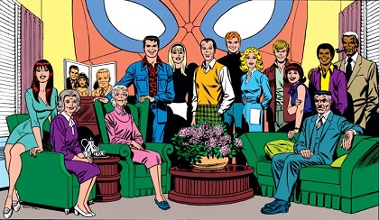
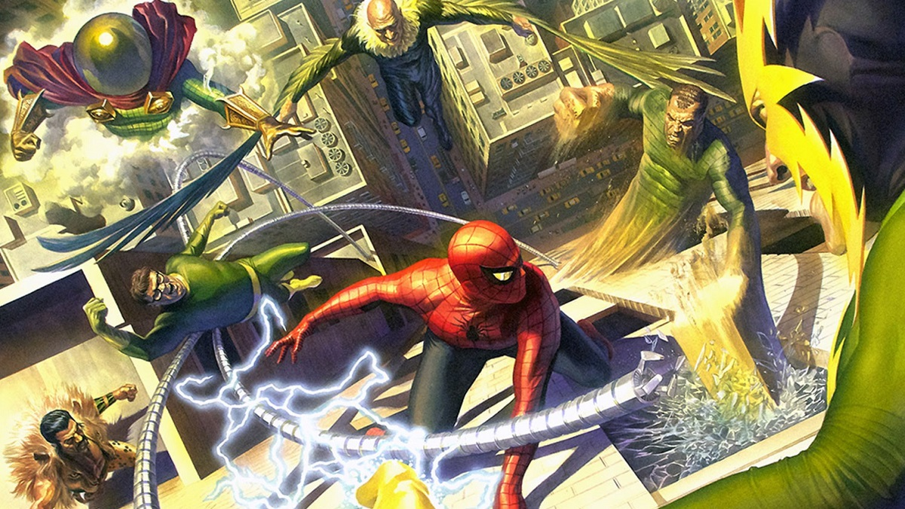
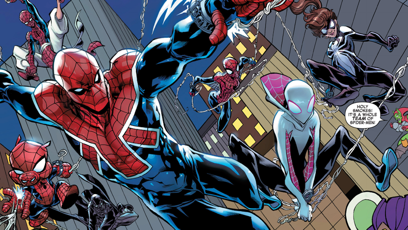

Origin
Bitten by a radioactive spider as a teenager, Peter Parker has taken the mantle of Spider-Man and has vowed to use his great power for an even greater responsibility!
Powers
- Web-Slinging
- Super-human agility
- Super-human strength
- Spider-Sense
Friends
Spider-Man has had many friends and supporters in the past. His main supporting cast, however, is Mary Jane Watson, Gwen Stacy, Harry Osborne, Aunt May, and J. Jonah Jameson!
Foes!
Spider-Man's main foes: The Sinister Six!
- Mysterio: Master of Illusions
- Vulture: Creature of the Skies
- Sandman: Shapeshifting Criminal
- Electro: Electrifying Menace
- Kraven: The Big Game Hunter
- Doctor Octopus: Mad Genius
Spider-Man's arch nemesis: The Green Goblin
Alternate Spider-Men!
Though the main universe 616 Spider-Man is the most recognizable version of the character, he has some in many forms in many different universes. The most famouse of these are Spider-Gwen, Spider-Woman (Mayday Parker), Spider-Pig, Spider-Noir, and Spider-Man 2099.